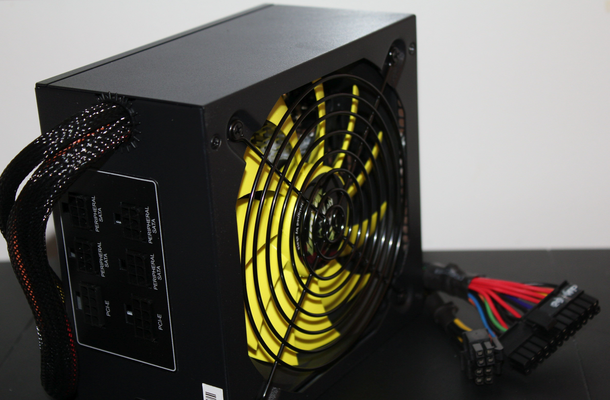

Fuente de Poder: Energía Segura
Módulo educativo para la infraestructura del computador de desarrollo

¿Qué es?
La Fuente de Poder o Unidad de Suministro de Energía (PSU por sus siglas en inglés) es el dispositivo encargado de transformar la corriente alterna (AC) proveniente de la red eléctrica del hogar en corriente continua (DC), adecuada para los componentes electrónicos del PC.
Función Principal
Suministrar voltajes estables y precisos (+12V, +5V, +3.3V) a la tarjeta madre, CPU, GPU y discos, protegiendo los componentes mediante sistemas de seguridad contra sobretensiones (OVP), cortocircuitos (SCP) y sobrecalentamiento (OTP).
Importancia para la Programación
Un apagón inesperado o una fluctuación de voltaje causada por una fuente genérica defectuosa puede corruptar el sistema de archivos del sistema operativo o perder commits no guardados en tu repositorio de Git. Una fuente de calidad garantiza operatividad ininterrumpida y segura.
Recomendación para Estudiantes ADSO
Adquirir una fuente de poder de 500W a 650W certificada 80 Plus Bronze como mínimo. Se sugiere optar por marcas reconocidas con garantía mínima de 3 a 5 años.
¿Sabías que...?
Una fuente de poder con certificación 80 Plus desperdicia menos del 20% de la energía consumida en forma de calor residual, traduciéndose en menor consumo en la factura eléctrica y menor generación de ruido.